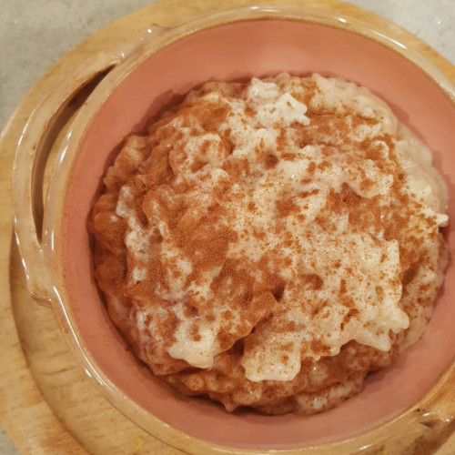
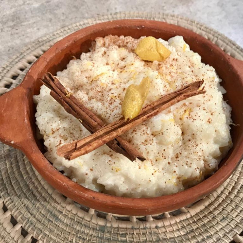
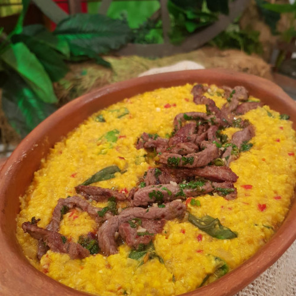

Arroz Con Leche

INGREDIENTES:
- Arroz doble carolina 150 grs.
- Leche 1 L.
- Azúcar 150 grs.
- Canela en rema 1 unid.
- Canela en polvo c/n.
- Piel de limón 2 tiras.
PROCEDIMIENTO:
- ⚡En una cacerola colocar la leche 🥛, la ramita de canela y las pieles de limón 🍋. Llevar a hervor e incorporar el arroz 🌾.
- ⚡Hervir suavemente durante 20 minutos, revolviendo de vez en cuando.
- ⚡Agregar el azúcar y la crema de leche. Hervir 5 minutos más.
- ⚡Dejar enfríar. Y a comer! 🌾🥛✨.
Más Recetas
Arroz con Leche Cremoso
Proba esta espectacular receta de Arroz con Leche Cremoso, no te vas a arrepentir es realmente delicioso.
Mirá la receta

Arroz Con Leche de la Abuela
Este delicioso plato te hace recordar a ese fantastico arroz con leche que tu abuela hacia cuando eras chico.
Mirá la recetaWafles
Una receta espectacular para que puedas hacer estos Wafles en tu casa y probar ese desayuno Americano.
Mirá la receta

Humita en olla
Esta plato es solo para cocineros expertos, es dificil pero realmente delicioso. ¿Te animas a probarlo?
Mirá la receta